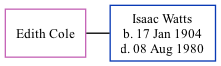

Edith Cole, the wife of Isaac Watts (the second cousin twice-removed on the father's side of Nigel Horne), and married Isaac (a r a f) at Registry Office, Faversham, Kent, England on Feb 27, 19261.
Citations
British Royal Air Force, Airmen's Service Records 1912-1939 - Findmypast
Family Tree

Generated by ged2site. Last updated on Nov 13, 2024